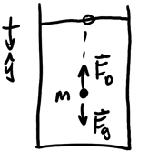

Drag
Table of Contents
1. Drag Force
Drag force exists when there is relative motion between a solid and a fluid. It points in the direciton that opposes relative motion, and is given by the following equation:
\begin{align} F_D = bv^n \end{align}where \(b\) is the drag coefficient, \(v\) is speed, and \(n\) is an integer that is empirically determined and primarily depends on speed regime.
Example: Bead in oil jar
Consider a bead of mass \(m\) dropping in a jar filled with oil, with the drag force given by \(F_D=bv\):

Since the object is of small size, we can assume that buoyant force is negligible. We would like to find the velocity of the bead. By Newton's 2nd law, we have:
\begin{align} F_g - F_D &= ma \notag \\ mg - bv &= ma \notag \\ mg - bv &= m \frac{\text{d}v}{\text{d}t} \notag \\ \frac{\text{d}v}{\text{d}t} &= g - \frac{bv}{m} \notag \\ \frac{\text{d}v}{\text{d}t} &= -\frac{b}{m}(v-\frac{mg}{b}) \notag \end{align}Since \(\frac{\text{d}v}{\text{d}t} = \frac{\text{d}(v-\frac{mg}{b})}{dt}\), we can write this as:
\begin{align} \frac{\text{d}(v-\frac{mg}{b})}{dt} = -\frac{b}{m}(v-\frac{mg}{b}) \notag \end{align}Solving this differential equation by separation of variables, we have:
\begin{align} \frac{\text{d}(v-\frac{mg}{b})}{v-\frac{mg}{b}} &= -\frac{b}{m}\text{ d}t \notag \\ \int_{v_0}^{v(t)} \frac{\text{d}(v'-\frac{mg}{b})}{v'-\frac{mg}{b}} &= \int_0^t -\frac{b}{m} \text{ d}t' \notag \\ \left[\ln(v'-\frac{mg}{b})\right]_{v_0}^{v(t)} &= -\frac{b}{m}[t']_0^t \notag \\ \ln\left(\frac{v(t) - \frac{mg}{b}}{v_0 - \frac{mg}{b}}\right) &= -\frac{b}{m}t \notag \end{align}Taking the exponent of both sides:
\begin{align} \frac{v(t) - \frac{mg}{b}}{v_0 - \frac{mg}{b}} &= e^{-\frac{b}{m}t} \notag \\ v(t) - \frac{mg}{b} &= (v_0 - \frac{mg}{b})e^{-\frac{b}{m}t} \notag \end{align}Therefore we can isolate \(v(t)\) to find that:
\begin{align} \boxed{v(t) = \frac{mg}{b} + (v_0 - \frac{mg}{b})e^{-\frac{b}{m}t}} \notag \end{align}We can find the terminal velocity of the bead by taking the limit of \(v(t)\) as \(t\) approaches infinity, which would yield \(\frac{mg}{b}\). However, we can also note that at terminal velocity, \(a=0\), thus:
\begin{align} mg - bv_T &= 0 \notag \\ v_T &= \frac{mg}{b} \notag \end{align}